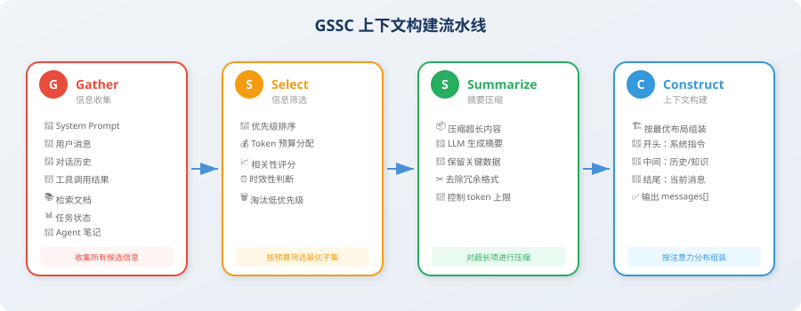

实战：构建上下文管理器
📖 "Talk is cheap, show me the code." — 让我们用代码实现一个完整的上下文管理系统。
经过前三节的理论学习，你已经掌握了上下文工程的核心概念：六大信息源、注意力预算、Lost-in-the-Middle 效应、三大长时程策略。现在，是时候把这些知识落地为可运行的代码了。
项目目标
在本节中，我们将实现一个 GSSC（Gather-Select-Summarize-Construct）上下文构建流水线 [1]——这是一个从信息收集到上下文组装的完整工作流，可以作为任何 Agent 项目的上下文管理基础设施。
完成后，你将拥有一个可以直接复用的上下文管理模块，它能够：
- 从六大信息源自动收集候选信息
- 按优先级和 token 预算智能筛选最优子集
- 对超长内容自动压缩为精炼摘要
- 按 Lost-in-the-Middle 感知的最优布局组装最终上下文

GSSC 流水线概述
GSSC 流水线包含四个阶段，信息像流水线上的产品一样，依次经过每个阶段的处理：
| 阶段 | 名称 | 作用 | 对应的上下文工程原则 |
|---|---|---|---|
| G | Gather（收集） | 从六大来源收集所有候选信息 | — |
| S | Select（选择） | 根据优先级和预算筛选最优子集 | 相关性优先 + 动态裁剪 |
| S | Summarize（摘要） | 对超长内容进行压缩 | 动态裁剪 |
| C | Construct（构建） | 按注意力分布最优布局组装 | 结构化呈现 |
💡 设计思路：GSSC 的每个阶段都是独立的、可替换的模块。你可以根据自己的需求替换任何一个阶段的实现——比如用更高级的语义过滤替换 Select 阶段，或者用专门的领域模型替换 Summarize 阶段。
完整实现
接下来，我们将从数据结构定义开始，逐步构建 GSSC 流水线的完整实现。整个实现由 6 个步骤组成，每个步骤对应一个独立的模块——你可以按顺序阅读理解全貌，也可以单独替换某个模块来适配自己的场景。
步骤1：定义数据结构
任何工程项目的第一步都是定义清晰的数据结构。在 GSSC 流水线中，我们需要两个核心数据结构：ContextItem（上下文中的一个信息片段）和 ContextBudget（预算配置）。
ContextItem 是流水线中流动的"货物"——每个信息源（对话、工具结果、检索文档等）都会被包装成一个 ContextItem，带上它的元信息（来源类型、优先级、相关性分数、token 数量）。这些元信息在后续的 Select 和 Construct 阶段中将被用于决策。
"""
GSSC 上下文构建流水线
完整实现代码
"""
from dataclasses import dataclass, field
from typing import Optional
from enum import Enum
import json
import time
class InfoSource(Enum):
"""信息来源类型"""
SYSTEM_PROMPT = "system_prompt"
USER_MESSAGE = "user_message"
CONVERSATION = "conversation"
TOOL_RESULT = "tool_result"
RETRIEVED_DOC = "retrieved_doc"
TASK_STATE = "task_state"
AGENT_NOTE = "agent_note"
@dataclass
class ContextItem:
"""上下文中的一个信息片段"""
content: str
source: InfoSource
priority: int = 5 # 1（最高）到 10（最低）
relevance_score: float = 1.0 # 与当前任务的相关性 0~1
token_count: int = 0
timestamp: float = field(default_factory=time.time)
metadata: dict = field(default_factory=dict)
def __post_init__(self):
if self.token_count == 0:
# 简单的 token 估算
self.token_count = len(self.content) // 3 # 中文约 1.5 字/token
@dataclass
class ContextBudget:
"""上下文预算配置"""
total_tokens: int = 128000
output_reserve: int = 4096
system_prompt_max: int = 2000
task_state_max: int = 3000
agent_notes_max: int = 2000
recent_conversation_max: int = 20000
tool_results_max: int = 40000
retrieved_docs_max: int = 20000
history_max: int = 30000
@property
def available_input_tokens(self) -> int:
return self.total_tokens - self.output_reserve
步骤2：实现 Gather（信息收集）
Gather 是流水线的第一个阶段，它的职责很简单：从各个来源收集所有可能需要的信息，形成一个候选池。
这个阶段故意不做任何筛选——收集就是收集，判断交给后续阶段。就像图书馆的采购部门，先把可能有用的书都买进来，上架和推荐的事情留给其他部门做。
注意 add_conversation_history 方法中的优先级计算逻辑：越近的消息优先级越高。这是因为在大多数 Agent 场景中，最近的对话往往与当前任务最相关——这一假设在后续的 Select 阶段会被利用。
class GatherStage:
"""
G - Gather 阶段：收集所有可能需要的信息
从各个来源拉取数据，形成候选信息池
"""
def __init__(self):
self.items: list[ContextItem] = []
def add_system_prompt(self, prompt: str):
"""添加系统提示词"""
self.items.append(ContextItem(
content=prompt,
source=InfoSource.SYSTEM_PROMPT,
priority=1, # 最高优先级
))
def add_user_message(self, message: str):
"""添加当前用户消息"""
self.items.append(ContextItem(
content=message,
source=InfoSource.USER_MESSAGE,
priority=1, # 最高优先级
))
def add_conversation_history(self, messages: list[dict]):
"""添加对话历史"""
for i, msg in enumerate(messages):
# 越近的消息优先级越高
recency = i / len(messages) # 0（最旧）到 1（最新）
priority = int(8 - recency * 5) # 3（最新）到 8（最旧）
self.items.append(ContextItem(
content=f"[{msg['role']}]: {msg['content']}",
source=InfoSource.CONVERSATION,
priority=priority,
metadata={"turn_index": i, "role": msg["role"]},
))
def add_tool_result(self, tool_name: str, result: str,
is_recent: bool = True):
"""添加工具调用结果"""
self.items.append(ContextItem(
content=f"[工具: {tool_name}]\n{result}",
source=InfoSource.TOOL_RESULT,
priority=2 if is_recent else 6,
metadata={"tool_name": tool_name},
))
def add_retrieved_doc(self, doc: str, score: float):
"""添加检索到的文档"""
self.items.append(ContextItem(
content=doc,
source=InfoSource.RETRIEVED_DOC,
priority=4,
relevance_score=score,
))
def add_task_state(self, state: dict):
"""添加任务状态"""
self.items.append(ContextItem(
content=json.dumps(state, ensure_ascii=False, indent=2),
source=InfoSource.TASK_STATE,
priority=2,
))
def add_agent_note(self, note: str):
"""添加 Agent 笔记"""
self.items.append(ContextItem(
content=note,
source=InfoSource.AGENT_NOTE,
priority=2,
))
def get_all_items(self) -> list[ContextItem]:
return self.items
步骤3：实现 Select（信息选择）
Select 是流水线中最关键的决策阶段——它决定了候选池中的哪些信息最终会进入上下文。这个阶段直接体现了 3.1 节中讲到的"相关性优先"和"动态裁剪"原则。
核心设计思路是分层优先级：首先无条件保留 system prompt 和用户消息（它们永远是最高优先级），然后按重要性递减的顺序依次填充任务状态、Agent 笔记、工具结果、检索文档、对话历史。每一层都有自己的 token 预算上限，超出的部分会被截断。
这种分层设计的好处是：当总预算紧张时，低优先级的信息会被自动裁剪，而高优先级的信息始终得到保障。就像航空公司在超售时的处理策略——头等舱的乘客永远能登机，经济舱的可能需要改签。
class SelectStage:
"""
S1 - Select 阶段：根据预算和优先级筛选信息
"""
def __init__(self, budget: ContextBudget):
self.budget = budget
def select(self, items: list[ContextItem]) -> list[ContextItem]:
"""按优先级和预算选择信息"""
# 按来源分组
groups: dict[InfoSource, list[ContextItem]] = {}
for item in items:
groups.setdefault(item.source, []).append(item)
selected = []
# 1. 必选项：system prompt 和 user message（始终保留）
for source in [InfoSource.SYSTEM_PROMPT, InfoSource.USER_MESSAGE]:
if source in groups:
selected.extend(groups[source])
# 2. 高优先级：任务状态和 Agent 笔记
for source in [InfoSource.TASK_STATE, InfoSource.AGENT_NOTE]:
if source in groups:
items_in_group = groups[source]
max_tokens = (self.budget.task_state_max
if source == InfoSource.TASK_STATE
else self.budget.agent_notes_max)
selected.extend(
self._fit_within_budget(items_in_group, max_tokens)
)
# 3. 工具结果（优先保留最近的）
if InfoSource.TOOL_RESULT in groups:
tool_items = sorted(
groups[InfoSource.TOOL_RESULT],
key=lambda x: x.priority
)
selected.extend(
self._fit_within_budget(
tool_items, self.budget.tool_results_max
)
)
# 4. 检索文档（按相关性排序）
if InfoSource.RETRIEVED_DOC in groups:
doc_items = sorted(
groups[InfoSource.RETRIEVED_DOC],
key=lambda x: x.relevance_score,
reverse=True
)
selected.extend(
self._fit_within_budget(
doc_items, self.budget.retrieved_docs_max
)
)
# 5. 对话历史（优先保留最近的）
if InfoSource.CONVERSATION in groups:
conv_items = sorted(
groups[InfoSource.CONVERSATION],
key=lambda x: x.metadata.get("turn_index", 0),
reverse=True # 最近的优先
)
selected.extend(
self._fit_within_budget(
conv_items, self.budget.history_max
)
)
return selected
def _fit_within_budget(
self, items: list[ContextItem], max_tokens: int
) -> list[ContextItem]:
"""在 token 预算内选择尽可能多的项"""
selected = []
remaining = max_tokens
for item in items:
if item.token_count <= remaining:
selected.append(item)
remaining -= item.token_count
else:
break
return selected
步骤4：实现 Summarize（摘要压缩）
经过 Select 阶段筛选后，被选中的信息片段可能仍然很长——比如一个 SQL 查询返回了一张 3000 tokens 的大表格，或者一篇检索到的文档有 5000 tokens。Summarize 阶段的任务是对这些超长片段进行压缩，在保留核心信息的前提下减少 token 占用。
一个重要的设计决策是：不同来源的信息使用不同的压缩策略。工具结果需要保留所有数字数据（因为数据分析 Agent 的核心价值就在于数据的准确性），而检索文档只需要保留关键知识点（冗余的背景介绍和引用格式可以去掉）。这种差异化压缩策略，比"一刀切"的通用摘要能保留更多有价值的信息。
from openai import OpenAI
client = OpenAI()
class SummarizeStage:
"""
S2 - Summarize 阶段：对超长内容进行压缩
"""
def __init__(self, max_item_tokens: int = 2000):
self.max_item_tokens = max_item_tokens
def summarize(self, items: list[ContextItem]) -> list[ContextItem]:
"""对超长的项进行摘要"""
result = []
for item in items:
if item.token_count > self.max_item_tokens:
# 需要压缩
compressed = self._compress_item(item)
result.append(compressed)
else:
result.append(item)
return result
def _compress_item(self, item: ContextItem) -> ContextItem:
"""压缩单个上下文项"""
# 根据来源使用不同的压缩策略
if item.source == InfoSource.TOOL_RESULT:
prompt = f"""请压缩以下工具调用结果，保留关键数据和结论，去除冗余格式信息：
{item.content}
压缩要求：
- 保留所有数字数据
- 保留结论性信息
- 去除重复的表头、格式说明等
- 控制在 500 字以内"""
elif item.source == InfoSource.RETRIEVED_DOC:
prompt = f"""请提取以下文档中与当前任务最相关的核心内容：
{item.content}
要求：控制在 300 字以内，只保留关键知识点。"""
else:
prompt = f"""请简要总结以下内容的要点：
{item.content}
要求：控制在 300 字以内。"""
response = client.chat.completions.create(
model="gpt-4o-mini",
messages=[{"role": "user", "content": prompt}],
max_tokens=600,
)
compressed_content = response.choices[0].message.content
return ContextItem(
content=f"[压缩] {compressed_content}",
source=item.source,
priority=item.priority,
relevance_score=item.relevance_score,
metadata={**item.metadata, "compressed": True},
)
步骤5：实现 Construct（上下文构建）
这是流水线的最后一个处理阶段，也是 3.2 节 Lost-in-the-Middle 效应知识的直接应用。Construct 阶段负责把经过筛选和压缩的信息片段，按照注意力最优的布局组装成最终的 messages 列表。
布局策略的核心思想在代码注释中已经说明：开头区域（高注意力）放系统指令和任务状态——确保 Agent "不迷路"；中间区域（较低注意力）放辅助性的历史对话和检索文档——即使被部分忽略也不致命；结尾区域（最高注意力）放用户的当前消息——确保 Agent 紧紧围绕用户的最新需求来回答。
这种"三明治"式的布局设计，让每类信息都被放在了最适合它的位置——关键信息不会被"埋"在中间而被忽略，辅助信息也不会抢占宝贵的头尾注意力位置。
class ConstructStage:
"""
C - Construct 阶段：按最优布局组装最终上下文
布局策略（基于 Lost-in-the-Middle 效应）：
[高注意力] System Prompt → Task State → Agent Notes
[中注意力] 对话历史 → 检索文档 → 工具结果
[高注意力] 最近对话 → 用户消息
"""
def construct(self, items: list[ContextItem]) -> list[dict]:
"""组装最终的 messages 列表"""
# 按来源分组
groups: dict[InfoSource, list[ContextItem]] = {}
for item in items:
groups.setdefault(item.source, []).append(item)
messages = []
# === 开头区域（高注意力）===
# 1. System Prompt
if InfoSource.SYSTEM_PROMPT in groups:
system_content = groups[InfoSource.SYSTEM_PROMPT][0].content
# 将任务状态和笔记嵌入 system message
extra_sections = []
if InfoSource.TASK_STATE in groups:
state_content = groups[InfoSource.TASK_STATE][0].content
extra_sections.append(f"\n\n## 当前任务状态\n{state_content}")
if InfoSource.AGENT_NOTE in groups:
note_content = groups[InfoSource.AGENT_NOTE][0].content
extra_sections.append(f"\n\n## 执行笔记\n{note_content}")
messages.append({
"role": "system",
"content": system_content + "".join(extra_sections)
})
# === 中间区域（注意力较低 → 放辅助信息）===
# 2. 检索文档
if InfoSource.RETRIEVED_DOC in groups:
docs = [item.content for item in groups[InfoSource.RETRIEVED_DOC]]
messages.append({
"role": "system",
"content": "## 相关知识\n\n" + "\n\n---\n\n".join(docs)
})
# 3. 历史对话（按时间顺序排列）
if InfoSource.CONVERSATION in groups:
conv_items = sorted(
groups[InfoSource.CONVERSATION],
key=lambda x: x.metadata.get("turn_index", 0)
)
for item in conv_items:
role = item.metadata.get("role", "user")
content = item.content
# 去掉 "[role]: " 前缀
if content.startswith(f"[{role}]: "):
content = content[len(f"[{role}]: "):]
messages.append({"role": role, "content": content})
# 4. 工具结果
if InfoSource.TOOL_RESULT in groups:
for item in groups[InfoSource.TOOL_RESULT]:
messages.append({
"role": "assistant",
"content": item.content,
})
# === 结尾区域（最高注意力）===
# 5. 当前用户消息（始终在最后）
if InfoSource.USER_MESSAGE in groups:
messages.append({
"role": "user",
"content": groups[InfoSource.USER_MESSAGE][0].content
})
return messages
步骤6：组装 GSSC 流水线
现在到了最激动人心的部分——把前面所有的模块组装成一个完整的流水线。GSSCPipeline 类是整个系统的入口点，它提供了一个简洁的 build() 接口，让调用者只需提供原始数据，就能获得一个优化过的 messages 列表——可以直接传给任何 LLM API。
注意 build() 方法中的四行核心逻辑——每一行对应 GSSC 的一个阶段，信息像水流一样依次经过 Gather → Select → Summarize → Construct，最终输出高质量的上下文。每个阶段都会打印一条日志，让你清楚地看到信息在每个阶段的变化。
class GSSCPipeline:
"""
GSSC 上下文构建流水线
Gather → Select → Summarize → Construct
"""
def __init__(
self,
budget: Optional[ContextBudget] = None,
max_item_tokens: int = 2000,
):
self.budget = budget or ContextBudget()
self.gather = GatherStage()
self.select = SelectStage(self.budget)
self.summarize = SummarizeStage(max_item_tokens)
self.construct = ConstructStage()
def build(
self,
system_prompt: str,
user_message: str,
conversation_history: list[dict] = None,
tool_results: list[dict] = None,
retrieved_docs: list[dict] = None,
task_state: dict = None,
agent_notes: str = None,
) -> list[dict]:
"""
一站式构建最优上下文
Args:
system_prompt: 系统提示词
user_message: 当前用户消息
conversation_history: [{"role": "user/assistant", "content": "..."}]
tool_results: [{"tool": "name", "result": "...", "recent": True}]
retrieved_docs: [{"content": "...", "score": 0.95}]
task_state: {"current_step": 3, "completed": [...], ...}
agent_notes: Agent 的结构化笔记
Returns:
list[dict]: 可直接传给 LLM API 的 messages 列表
"""
# === G: Gather ===
self.gather = GatherStage() # 重置
self.gather.add_system_prompt(system_prompt)
self.gather.add_user_message(user_message)
if conversation_history:
self.gather.add_conversation_history(conversation_history)
if tool_results:
for tr in tool_results:
self.gather.add_tool_result(
tr["tool"], tr["result"], tr.get("recent", False)
)
if retrieved_docs:
for doc in retrieved_docs:
self.gather.add_retrieved_doc(doc["content"], doc["score"])
if task_state:
self.gather.add_task_state(task_state)
if agent_notes:
self.gather.add_agent_note(agent_notes)
all_items = self.gather.get_all_items()
print(f"📥 Gather: 收集了 {len(all_items)} 个信息片段")
# === S1: Select ===
selected_items = self.select.select(all_items)
print(f"🔍 Select: 筛选出 {len(selected_items)} 个片段")
# === S2: Summarize ===
summarized_items = self.summarize.summarize(selected_items)
compressed_count = sum(
1 for item in summarized_items
if item.metadata.get("compressed", False)
)
print(f"📦 Summarize: 压缩了 {compressed_count} 个超长片段")
# === C: Construct ===
messages = self.construct.construct(summarized_items)
total_tokens = sum(
len(m["content"]) // 3 for m in messages
)
print(f"🏗️ Construct: 构建完成，约 {total_tokens:,} tokens")
return messages
# === 使用示例 ===
pipeline = GSSCPipeline(
budget=ContextBudget(total_tokens=128000),
max_item_tokens=2000,
)
messages = pipeline.build(
system_prompt="你是一个资深数据分析师，擅长用户行为分析。",
user_message="基于之前的分析，请给出提升留存率的前 3 条建议。",
conversation_history=[
{"role": "user", "content": "帮我分析 Q1 的用户留存数据"},
{"role": "assistant", "content": "好的，我来查询数据库..."},
{"role": "user", "content": "重点看新用户的留存"},
{"role": "assistant", "content": "新用户 7 日留存率为 38%，环比下降 12%..."},
],
tool_results=[
{
"tool": "sql_query",
"result": "新用户7日留存率: 38%, 老用户7日留存率: 65%, ...",
"recent": True,
},
],
task_state={
"objective": "分析 Q1 用户留存率下降原因",
"completed_steps": ["数据查询", "基础统计", "分群分析"],
"current_step": "生成建议",
},
agent_notes="关键发现：新用户首日引导流程完成率仅 45%，是留存下降的主因。",
)
# 输出:
# 📥 Gather: 收集了 9 个信息片段
# 🔍 Select: 筛选出 9 个片段
# 📦 Summarize: 压缩了 0 个超长片段
# 🏗️ Construct: 构建完成，约 XXX tokens
本节小结
恭喜你完成了 GSSC 上下文构建流水线的实现！这是一个可以直接应用于生产项目的上下文管理基础设施。
| 阶段 | 核心功能 | 关键设计 |
|---|---|---|
| Gather | 从六大来源收集候选信息 | 自动按新旧程度分配优先级 |
| Select | 按优先级和预算筛选 | 必选项 → 高优先级 → 工具结果 → 文档 → 历史 |
| Summarize | 压缩超长内容 | 按来源类型使用不同压缩策略 |
| Construct | 按 Lost-in-the-Middle 最优布局组装 | 开头=系统+状态，中间=历史+知识，结尾=用户消息 |
在你的项目中使用 GSSC
GSSC 流水线是模块化的，你可以根据需要进行扩展：
- 增加缓存层：在 Summarize 阶段添加缓存，避免重复压缩相同内容
- 集成 embedding：在 Select 阶段使用语义相似度进行更精准的筛选
- 添加监控：记录每次构建的 token 分配和压缩比，用于优化预算配置
- 多模态支持：扩展 InfoSource 枚举以支持图片、音频等多模态信息
🤔 思考练习
- 如何为 GSSC 流水线添加缓存机制，避免重复压缩相同的内容？设计缓存 key 的策略。
- 如果 Agent 支持多模态输入（图片、音频），GSSC 流水线需要怎样扩展？Gather 和 Select 阶段分别需要什么改动？
- 如何评估上下文管理的效果？尝试设计一个 A/B 测试方案，对比"无管理"vs"GSSC 管理"的 Agent 输出质量。
第8章回顾
至此，你已经完整学习了上下文工程的理论与实践：
| 节 | 核心收获 | 关键概念 |
|---|---|---|
| 8.1 | 从提示工程跨越到上下文工程 | 六大信息源、三大原则、思维转变 |
| 8.2 | 理解上下文窗口的约束和注意力分布 | 上下文腐蚀、Lost-in-the-Middle、注意力预算 |
| 8.3 | 掌握长时程任务的三大策略 | 压缩整合、结构化笔记、子代理架构 |
| 8.4 | 动手实现可复用的上下文管理基础设施 | GSSC 流水线：Gather → Select → Summarize → Construct |
💡 下一步：上下文工程是贯穿整本书的底层能力。在后续章节中，无论是工具调用（第4章）、记忆系统（第5章）、还是 RAG（第7章），你都会反复用到本章学到的上下文管理思维。建议将 GSSC 流水线的代码保存到自己的工具库中，后续章节的实战项目将直接复用。
参考文献
[1] ANTHROPIC. Building effective agents[EB/OL]. 2024. https://www.anthropic.com/engineering/building-effective-agents.